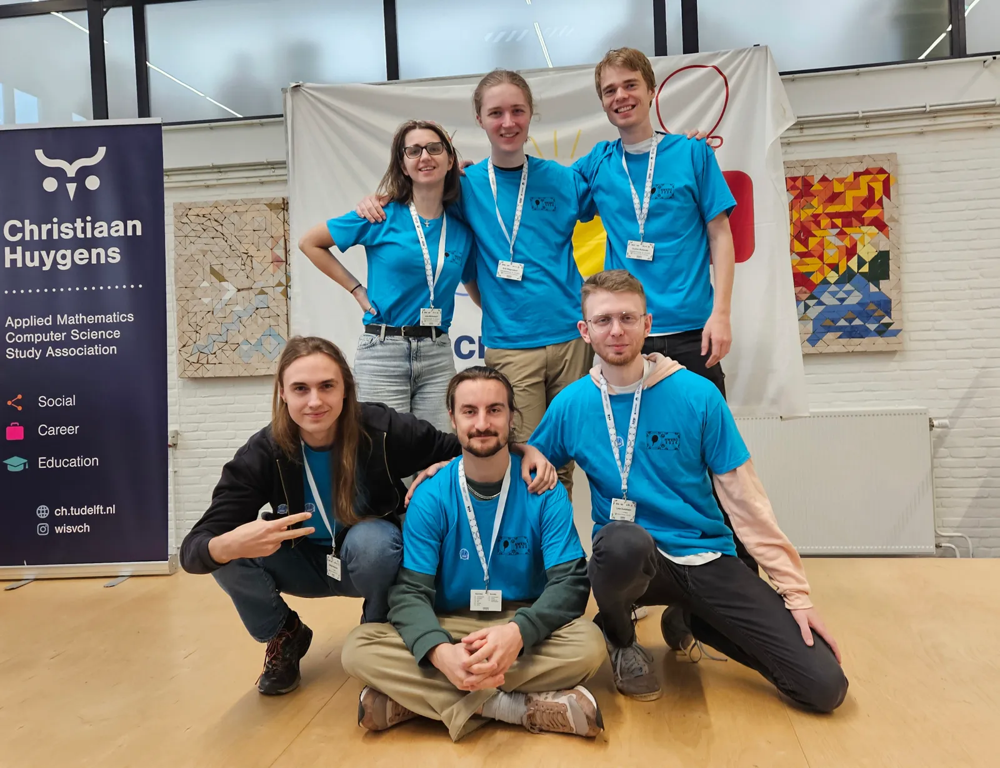
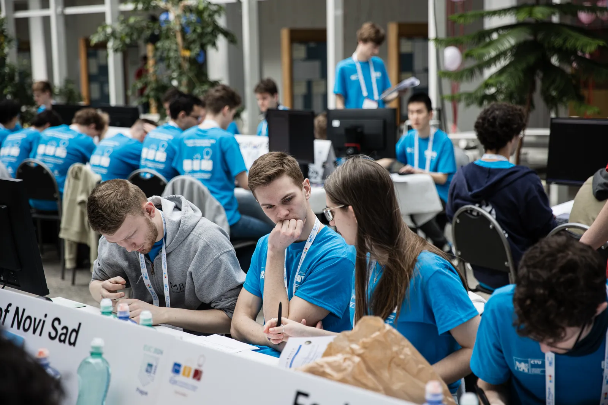
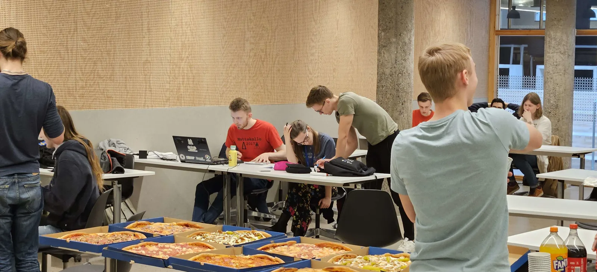

EUC 2025

Aldrig har så mycket suttit på spel. Läs reseberättelsen här!
Berättelser från när våra medlemmar åker på internationella programmeringstävlingar.
Aldrig har så mycket suttit på spel. Läs reseberättelsen här!

I år var Northwestern Europe Regional Contest (NWERC) återigen i Delft, Nederländerna. Läs reseberättelsen här!

ICPC stiftelsen introducerade, i samband med en minskning i antalet kvalifikationer för världsfinalerna, en ny tävling i år. Allt roligt som hände på resan kan du läsa i bloggen!

237 lag från hela norden deltog, bland dem 7 lag från Chalmers. Mycket bra resultat för Chalmers, bland annat både bästa och näst bästa studentlag i Sverige. Fullständiga resultat här.
Sju medlemmar åkte till Northwestern Europe Regional Contest (NWERC) 2022 i Delft i Nederländerna. Läs vår reseblogg här.